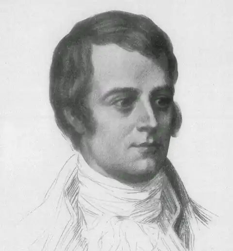
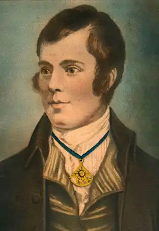
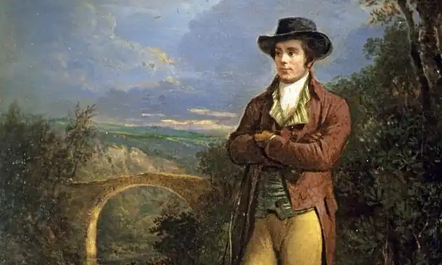

РОБЕРТ БЕРНС
(1759-1796)
"Незвичайна людина" або ще — "геніальний поет Шотландії",— так називав Вальтер Скотт Роберта Бернса, бідного селянина, який став видатним художником слова. Його країна була країною героїчної і трагічної долі: в 1707 році вона після важкої багатовікової боротьби була об'єднана з Англією й відчула на собі її великий вплив. Внаслідок швидкого зростання буржуазних відношень, огороджування та промислового перевороту почали зникати стародавні кланові традиції, відбулося масове озлидніння вільних землеробів та дрібних ремісників. Два повстання проти англійців (1715 та 1745 років) були жорстоко придушені й призвели до ще більшого посилення гніту, податкового та бюрократичного натиску на найбідніше населення. Такою була соціально-політична ситуація, в якій розвивалася творчість Бернса. З ранніх років у його свідомості перепліталися загострене відчуття національної гордості за минуле Шотландії і скорботне відчуття трагізму її теперішнього становища. Як людина та як поет Бернс формувався під впливом двох національних культур — шотландської та англійської. Їх взаємодія склалася здавна, але після унії загальнодержавною мовою була визнана англійська, а шотландська зведена до рівня діалекту. Панівні класи Англії намагалися насадити свою культуру, що не могло не породити в переможеному, але не зламаному народі непереборного бажання зберегти національні традиції, зберегти рідну мову. Працюючи в цих умовах, Роберт Бернс зумів піднятися і над рабським схиленням перед англійською літературою, і над національною обмеженістю, зумів поєднати у своїй поезії все найкраще з обох літературних традицій, по-своєму осмисливши й синтезувавши їх. Роберт Бернс народився в сім'ї фермера. Коротке його життя минало в безперервній боротьбі зі злиднями, у важкій пращ на фермах, орендування яких було вигідне лише для землевласників. Зіткнення з жадібними й грубими володарями, з проповідниками кальвіністських общин і простими людьми в невеликих селах південно-західної Шотландії, де минула дитинство та юність поета, рано познайомили його з нерівністю та утиском бідняків. Людина незалежного розуму й гордої душі, він глибоко співчував таким, як він сам, безправним трудівникам. Його освіта обмежилась уроками батька, який знав грамоту й лічбу, читанням маленької бібліотеки, що ретельно зберігалася. Потяг юнака до знань побачив і розвинув сором'язливий сільський вчитель, друг його батька. Багатий духовний світ поета, його надзвичайна майстерність — все це отримано шляхом безперервної й наполегливої самоосвіти. Поетичний хист у Бернса прокинувся рано. Перший вірш про світле юнацьке кохання ("Надзвичайна Неллі") було написано в п'ятнадцять років. За ним з'явилися й інші. їх любили, запам'ятовували друзі Бернса — сільська молодь, місцеві інтелігенти. За передплатою цих шанувальників у провінційному містечку 1786 року вперше була опублікована маленька книжка його віршів ("Кільмарнокський томик"). Жодне з единбурзьких видань більшої за обсягом книжки поем і лірики ("Единбурзький том",1787), навіть мода на поета-орача в салонах Единбурга не змінили участі Бернса. Він прожив у цьому місті близько двох років, бував у вищих колах, де викликав лише поблажливу цікавість і розмови, але продовжував жити в злиднях, в тривозі за рідних, без впевненості в завтрашньому дні. У "Стансах на ніщо" він сміливо назвав нікчемами тих, з ким йому доводилося зустрічатися в Единбурзі, які були байдужими до поета, до бід трудівників. У ранніх поетичних спробах Бернса чітко помітні сліди знайомства з творчістю Поупа, Джонсона та інших представників просвітницького класицизму. Пізніше в поезії Бернса можна знайти переклик із багатьма англійськими та шотландськими поетами. Він ніколи не наслідував традиції повністю, він переосмислював їх і створював свою. Таке ж ставлення було у Бернса і до фольклору — основи його поезії. Це виражається в глибинному розумінні ним суті народної творчості і його сприйнятті передових ідей століття. У народній пісні авторська особистість зникала, а Бернс змішував голос народу з поетичним "я". Головними темами його поезії були любов та дружба, людина й природа. Разом з цим, Бернс рано осмислив у своїх віршах та поемах зіткнення особистості й народу з суспільним злом, хоча, звісно, протиставлення інтимної та соціальної лірики в Бернса цілковито умовне. Вже рання лірика — це вірші про права молоді на щастя, про її зіткнення з деспотизмом релігії та сім'ї. Любов у Бернса завжди є силою, що допомагає людині відстояти кохану людину, захистити її і себе від підступних ворогів. Поет нерідко особисто стикався зі святенництвом церковників. Він відкидає і висміює його у "Вітанні своєї позашлюбної доньки" (1785). У віршах Бернса часто відкидалося релігійне розуміння суті людського буття. У "Похоронній пісні" він сперечається з апологією смерті як "найкращого друга бідноти" на дорозі до "загробної благодаті". Ця ж тема, у блискучому поєднанні сатири й гумору, розкрита у вірші "Смерть і доктор Харнбук", у якому пародіюється як її поетизація, так і користолюбство лікарів, які наживаються на смерті. Надзвичайний реалістичний портрет донощика й розпусника в "Молитві святоші Вілі" та "Епітафії" йому ж, де реальний факт став приводом для хоробрих викриттів святенницької доктрини кальвінізму. Тупість священика та його пастви висміяна в сатирі "Тільця". Бернс був не атеїстом, але його деїзм був схожим з атеїстичним відкиданням ролі Бога в житті людини та природи. Не в Богові, в природі, в житті, в боротьбі з прикрощами ставали мужніми і Бернс і його герої — прості люди. Не небесні сили, а особиста гідність, любов, допомога друзів підтримали їх. Берне рано почав замислюватися про причини суспільної нерівноправності. Спочатку у своїх віршах він був ладен покласти провину за всі незгоди бідняків та свої власні на сили світобудови — "небесні та диявольські". Але в пору зрілості він дійшов висновку, що не фатум, а реальні закони й порядки суспільства визначають участь людей. У 1785 році була написана кантата "Веселі злидні". її персонажі — бродяги: каліка-солдат, бідна жінка, мандрівні актори й ремісники. У кожного в минулому горе, випробування, конфлікти із законом, а сьогодні — гоніння, злидні. Але вони залишилися людьми. Жадоба до життя, можливість веселитися, дружити й кохати, гостре глузливе мовлення, відважність і стійкість — ось як змалював поет у динамічному груповому портреті обездолених земляків, що є близькими за колоритом до застольних сцен у художників фламандської школи. На веселому нічному гульбищі в кублі розпусної Пуссі Ненсі поет підтримує бідняків. Його пісня, бунтарська й зарозуміла, є фіналом кантати: До чорта тих, кого закони Від народу бережуть! В'язниці — трусам оборона, Церкви — святенництву приют. Текст цієї кантати було опубліковано тільки після смерті письменника. У поетичний світ Бернса одночасно з ліричним "я" увійшли життя й долі його сучасників: родичів, друзів, сусідів, тих, кого раптово зустрів, він запам'ятовував надовго. Він не байдужий до людей. Одних він кохає, дружить з ними, інших — ненавидить; багатьох називає на ім'я, і цими іменами постають життя і особистості, а читач надовго запам'ятовує їх. Такими є користолюбна Мегі з млину, наполегливий і чарівний залицяльник Фіндлей, гордівлива Тіббі, веселий Віллі-гультяй, друг поета Джон Андерсон. А серед них сам Берне — веселий і сміливий, ніжний і палкий в коханні, вірний у дружбі. Він поділяє з читачем щасливі й важкі хвилини. Уже ранні вірші Бернса були сповнені глибоких роздумів про час, життя людей, про себе та інших, таких само, як він. Поряд з піснями про кохання, розлуку, сум, піснями, що написані на популярні народні мотиви, виникли такі поетичні відкриття, як "Польовій миші, чиє гніздо я зруйнував плугом", "Був чесний фермер мій батько", "Дружба минулих літ" та багато сатиричних творів. Вальтер Скотт захищав Бернса від звинувачень у "грубості", "невихованості", дуже точно поцінував характер його обдарування, в якому поєдналися лірика й сатира. Він досить чітко визначив громадянську позицію поета: "Відчуття власної гідності, образ мислення, та й саме обурення Бернса були плебейські, щоправда, такі, що бувають у плебея з гордою душею, у афінського чи римського громадянина". Друга половина 80-х років була для поета та його сучасників сповнена хвилювань у зв'язку з революцією в Північній Америці, передреволюційною кризою у Франції, політичним збуренням в Англії. До них додалися особисті проблеми та зміни в житті поета. Він закохався в дочку багатого фермера Джин Армор, але не бачився з нею близько трьох років. Смерть батька, фінансові та сімейні незгоди змусили його серйозно подумати про від'їзд до Ямайки. Але він не прагнув зробити свою поезію джерелом заробітку грошей. Бернс не поїхав, але був вимушений погодитися з запропонованою йому посадою акцизного чиновника, і до кінця своїх днів він ніс ярмо цієї нудної та погано оплачуваної посади. Керівництво строго контролювала поета-вільнодумця, якому "не годилося" цікавитися політикою. Велику роль у творчості Бернса відігравала любов до людей праці. Його ідеал людини виникав в осмисленні народної історії і багатовікового досвіду трудових низів, їх теперішнього становища. Любов поета належить чесним і добрим трудівникам, борцям за правду та людяність. Разом з цим, він відкидає поширені в шотландському народі консервативно-націоналістичні ілюзії. Це відбилося в поетичній оцінці доль та особистостей шотландських королів, від Марії Стюарт до принца-претендента. Рух вперед і тільки вперед стверджував він як закон буття. Боротьба нового зі старим у Бернса драматична, здатна привести до непередбачених випадковостей та трагедій, все, що стоїть на шляху до майбутнього, повинно бути знищено. Таким є підтекст "Пісні смерті" (1792), "Дерева Свободи" (1793)та інших віршів що були написані в роки Великої французької революції. Ще раніше поет був за американську революцію. Він сприйняв її як удар по британській монархії. Але події у Франції були йому ближчі. Бернс із захопленням зустрів падіння Бастилії, суд і вирок Конвента Бурбонам, був захоплений боротьбою Республіки проти армії антифранцузької коаліції.